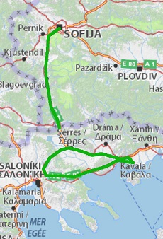

Европамоят континент
Кораб: 20 km
Автомобил: 26819 km
Влак: 3972 km
Кораб: 928 km
Общо: 61134 km
Градове: 52
Държави: 20
Континенти: 2
Емма на море
На 16-ти Ноември 2010-та се роди Емма - нашето смело и прекрасно момиче. Есенно бебе, тя първо видя снега, преди морето. Но ето, че дойде месец Юни и потеглихме към остров Тасос. Минахме през Кавала, точно под аквадукта и достигнахме Керамоти, от където взехме ферибота към острова.

София - Тасос
Малко преди да стигнем хотелчето ни, една черна котка ни мина през пътя. Не вярваме на тези поверия и само се засмяхме.
Морето ни тръгна много добре. Хубавото време, красивите и спокойни плажове и миризмата на смола от боровете и кедрите ни заредиха с енергия и топлина.
На 3тия ден дали заради котката, Емма вдигна висока температура. Ден след ден така и не я свали. На петия ден не издържахме и решихме да си тръгнем по – рано от плануваното. Рано сутринта, хванахме първия ферибот. Изгревът от борда на кораба бе красив. Гларусите и те подранили, летяха на една ръка разстояние на лов за солети и бисквити.
Веднага щом се прибрахме в София, Емма оздравя незабавно. Не оставихме така тази работа и септември си наваксахме пропуснатите два дни море с пет слънчеви дни на Ситония.